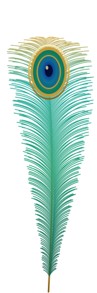

Enseñanza de instrumentos
El Instituto imparte enseñanza de instrumentos para quienes quieren acercarse a la música de la tradición.


Villa Gregorio A. García · Gómez Palacio, Durango
Arte · Cultura · Tradición
«Legado matachine, cultura viva»
Quiénes somos
Somos una asociación civil con sede en la Villa Gregorio A. García, en Gómez Palacio, Durango, dedicada al arte, la cultura y la tradición de la danza matachina.
El Instituto se constituyó formalmente en junio de 2007 como Persona Moral con Personalidad Jurídica Propia y Autonomía Patrimonial. Su emblema lleva la leyenda «EST. 1974»: es el año en que don Vicente Muñoz Cruz, presidente del Instituto, tomó las riendas de la danza.
Es decir, la constitución legal es de 2007, pero el camino de la danza que le da sentido al Instituto comenzó mucho antes. Hoy, Raúl Muñoz Villa es asesor y coordinador de danzas.
«Legado matachine, cultura viva».
Las danzas
«Los Nuevos Pavorreales» es el grupo oficial del Instituto y pertenece a la tradición de los matlachines. Sus orígenes se remontan a 1935, cuando la danza se conocía como «La Paloma Blanca»; en 1997 fue renombrada «Los Pavorreales», y en el año 2000 se incorporó el acordeón.
La enseñanza de don Víctor Navarro a don Vicente forma parte de la tradición oral de la danza: se transmite de palabra y de generación en generación.
Línea del tiempo
Nace la danza que más tarde será «Los Pavorreales».
Don Vicente Muñoz Cruz asume la conducción de la danza. De ahí la leyenda «EST. 1974» del emblema.
La danza cambia su nombre de «La Paloma Blanca» a «Los Pavorreales».
Se incorpora el acordeón a la música de la danza.
Se constituye el Instituto de Arte y Cultura General Gregorio A. García, A.C.
Desde este año el Instituto celebra el Día del Danzante, festival «Bailando con el corazón».
El municipio hace oficial el festival.
Se aprueba por unanimidad la declaratoria en Coahuila.
Lo que ofrecemos
El Instituto imparte enseñanza de instrumentos para quienes quieren acercarse a la música de la tradición.
Contamos con equipo de sonido para eventos comunitarios.
Raúl Muñoz Villa es asesor y coordinador de danzas del Instituto.
Festival «Bailando con el corazón», que el Instituto celebra desde 2016.
Galería
Fotogramas tomados de videos de archivo del grupo (2007 a 2014). Son material de baja resolución; el año y el lugar son los que indica cada toma. Toca una imagen para ampliarla.
No son fotografías. Las ilustraciones fueron generadas con inteligencia artificial para el proyecto del documental y llevan la etiqueta «Imagen ilustrativa / generada con IA». Las propuestas de lona son diseños gráficos.
Diseños gráficos para lonas de 3 × 1 m. No son fotografías.
Videos y documental
El Instituto reúne el material de archivo de «Los Nuevos Pavorreales» para un documental sobre la danza y las danzas de la región. Mientras tanto, aquí puedes consultar el catálogo de los 78 videos que el grupo tiene en su canal de YouTube.
Ver el catálogo de videos 10:44
10:44
 10:01
10:01
 1:33
1:33
 4:29
4:29
Invitación a la comunidad
Invitamos a madres y padres de familia, maestras y maestros, y a toda la sociedad a trabajar en equipo para acercar a las y los jóvenes al arte y a la tradición.
No se trata de competir entre danzas: se trata de sumar, de cuidar lo que heredamos y de que la juventud lo haga suyo.
Quiero participarContacto
Villa Gregorio A. García, Gómez Palacio, Durango.
Para hablar directamente con el Instituto, llama o escribe.
Si quieres saber más sobre el Instituto, sus danzas o la enseñanza de instrumentos, pídenos informes.